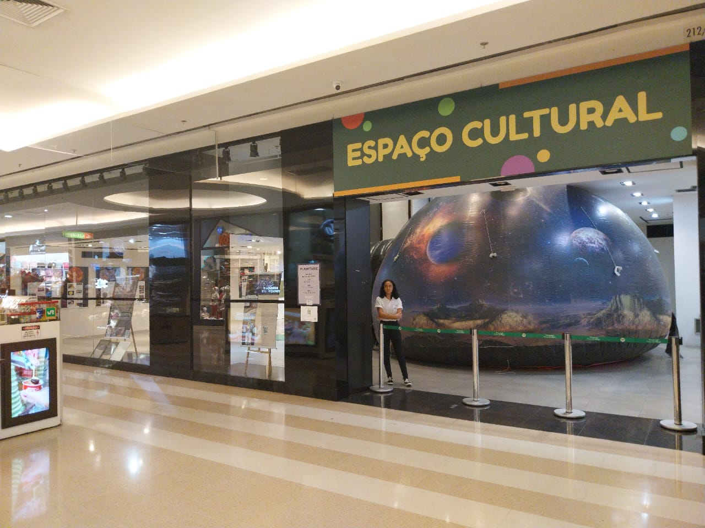

Planetário Móvel Inflável

O Planetário Inflável
O Planetário Portátil (STARDUST) é um equipamento composto por uma cúpula inflável, tecnicamente denominada domo, confeccionada em material não inflamável, e um projetor, responsável pela exibição de imagens do céu noturno visível a partir da Terra. Esse sistema permite que os espectadores observem e compreendam os movimentos celestes, abordando conceitos fundamentais e contemporâneos da Astronomia.
Este equipamento é operado por monitores do Clube de Astronomia Artemis-ABA para a realização de sessões educativas voltadas a estudantes, professores e ao público em geral. Cada sessão possui capacidade para até 30 pessoas e tem duração estimada entre 25 e 30 minutos, com roteiros adaptados conforme o perfil da audiência. De modo geral, são projetadas imagens do céu noturno do Hemisfério Sul e Norte, bem como representações das constelações mitológicas.
Por meio dessas projeções, é possível compreender o movimento aparente das estrelas, a configuração celeste característica de cada estação do ano, a localização e utilização do Cruzeiro do Sul para a determinação dos pontos cardeais terrestres, entre outros aspectos., acompanhadas da narração de seus mitos e lendas, além da localização do zodíaco. Adicionalmente, as sessões podem ser complementadas com uma sequência de slides ilustrativos sobre os planetas do Sistema Solar, destacando suas principais características e fomentando discussões sobre temas como ecologia, exploração espacial e a possibilidade de vida em outros planetas.
Dessa forma, o Planetário Portátil (STARDUST) se consolida como um instrumento didático de grande relevância para a divulgação científica, despertando o interesse do público pela Astronomia.
O Planetário Portátil (STARDUST) integra a programação de diversos eventos científicos e culturais realizados:
- PLANETÁRIO NA UNIFESP - CAMPUS DIADEMA. CERIMÔNIA DE ENTREGA DE MEDALHAS DA OBA.
- PLANETÁRIO NA ESCOLA PEI ANTONIETA BORGES ALVES - DIADEMA-SP- Culminância das eletivas.
- PLANETÁRIO NA SECRETARIA MUNICIPAL DE EDUCAÇÃO DE DIADEMA
- PLANETÁRIO NO SESC - BIRIGUI – SP
- PLANETÁRIO NO SHOPPING PRAÇA DA MOÇA – SEMANA DA ASTRONOMIA DE DIADEMA.
- FUNDAÇÃO CENTRO DE ATENDIMENTO SOCIOEDUCATIVO AO ADOLESCENTE- CASA.
Responsável:
Professor Milton Pereira.
Sobre o professor Milton Pereira: https://www.astronomianaescola.elementfx.com/trabalhos.html
.